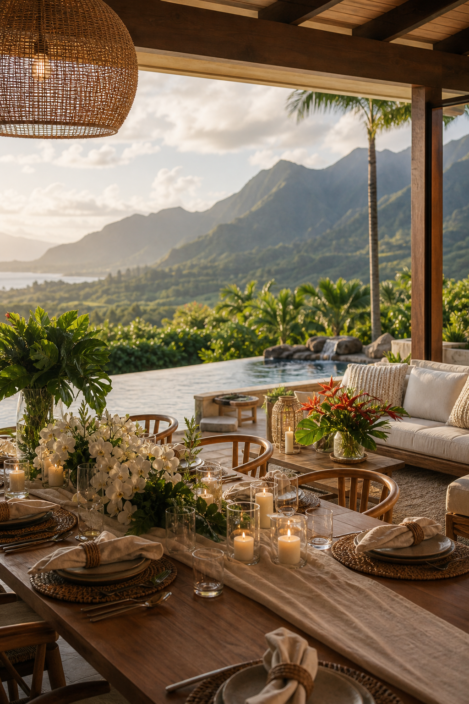
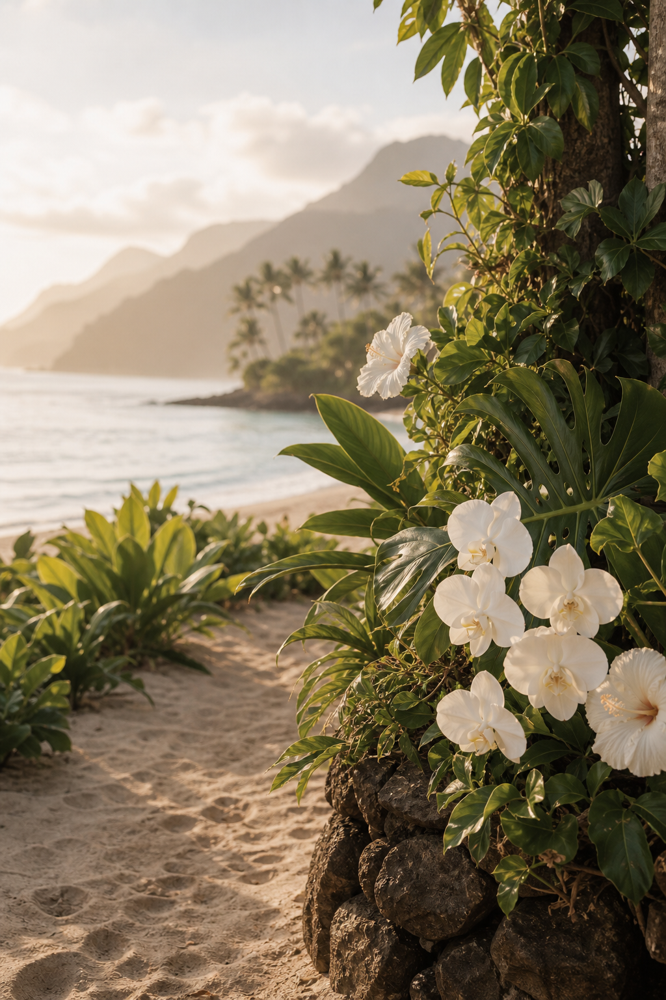
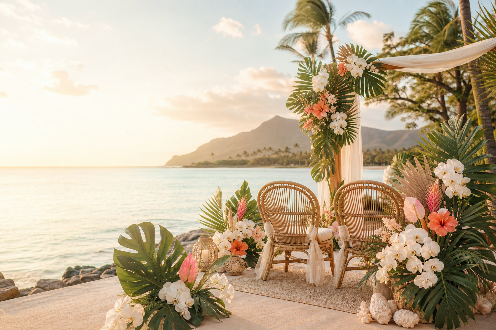

A sunrise celebration on the North Shore of Kauai
Bri & Liam
Welcome
We are so grateful to celebrate this moment with the people closest to us.
We cannot wait to gather on the North Shore of Kauai for a simple, meaningful sunrise ceremony, followed by brunch and time together in one of our favorite places.
We are keeping our wedding small and meaningful, surrounded by the people closest to us. Thank you for making the trip to celebrate with us in Kauai.
Ceremony
Meet us at sunrise.
Please meet us on the north side of Tunnels Beach just before 7:00 AM. Parking can be limited and travel on the North Shore can take longer than expected, so we recommend giving yourself extra time and carpooling when possible.
Guests should arrive just before 7:00 AM.
North Shore Kauai
After the ceremony
Celebration brunch at 1 Hotel Hanalei Bay.
9:15 AM
After the ceremony, we will continue the celebration with brunch at 1 Hotel Hanalei Bay. All guests are invited to join us.

July 9 · 2:00 PM
Welcome Rehearsal
Join us the day before the ceremony for a relaxed Welcome Rehearsal at a private Princeville residence overlooking the North Shore. We will share the exact address closer to the wedding.
Expect a casual dinner party, beautiful views, and time together before the early morning ceremony.
- Location
- Private Princeville residence / Belskus residence
- Address
- To be added later
Weekend Schedule
A simple rhythm for two days together.
2:00 PM
Welcome Rehearsal
Casual dinner party at a private residence overlooking Princeville and Hanalei.
Just before 7:00 AM
Guest arrival at Tunnels Beach
Please plan extra travel time and meet us on the north side of the beach.
7:00 AM
Sunrise ceremony
A small, meaningful ceremony at Tunnels Beach.
9:15 AM
Celebration brunch
All guests are invited to 1 Hotel Hanalei Bay.
Dress Code
Beach-friendly neutrals and florals.
Think linen, soft earth tones, muted colors, tropical prints, and comfortable shoes for the sand. Please avoid wearing white.
The ceremony will be on or near the beach, so skip heels or anything difficult to walk in on sand. Dress comfortably for a morning beach ceremony.
Kauai Notes
A few helpful notes for the morning.
Parking near Tunnels Beach can be limited.
Travel on the North Shore can take longer than expected.
Please carpool when possible and plan to arrive early.
Beach-friendly shoes are recommended.
You may want sunglasses or water for the morning ceremony.
Wedding Weekend Map
Across Kauai's North Shore.
Our wedding weekend takes place across Kauai's North Shore, from Tunnels Beach to Princeville and Hanalei Bay.
North Shore Inspiration
Soft coastline, green mountains, and slow mornings.


“Many waters cannot quench love; rivers cannot sweep it away.”
Song of Solomon 8:7
Things to Do
A few North Shore favorites to add later.
Beaches
Add favorite beaches and morning swim spots.
Coffee
Add coffee shops for slow mornings in Hanalei.
Food
Add casual dinner, lunch, and shave ice favorites.
Hikes
Add trail notes and safety reminders for guests.
Hanalei Favorites
Add shops, views, and easy afternoon ideas.
North Shore Activities
Add surf lessons, boat days, or scenic drives.